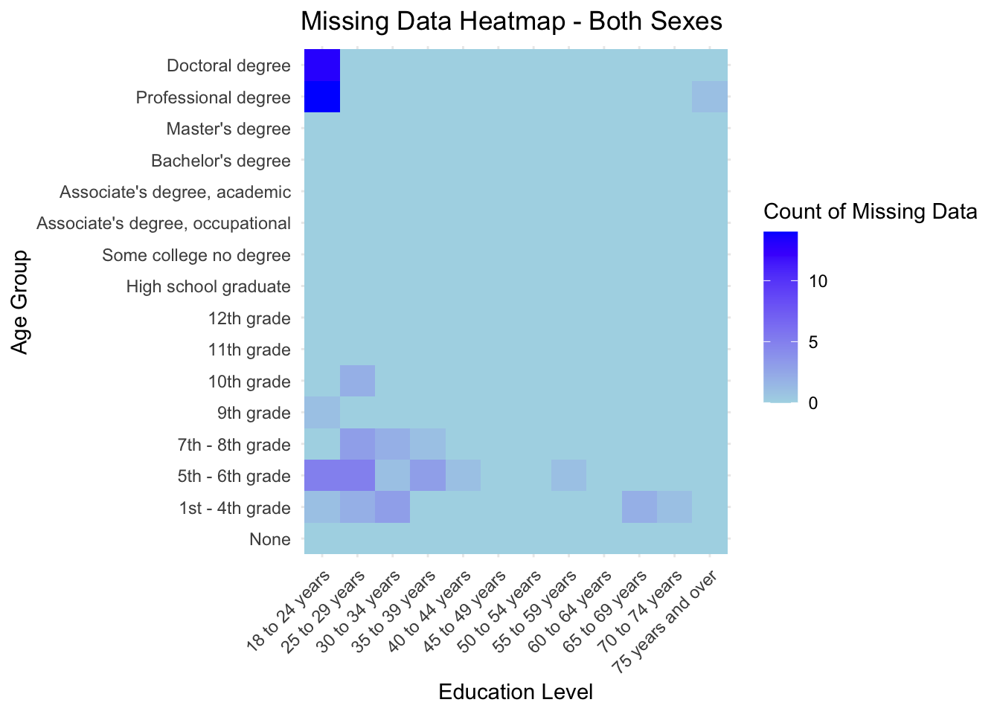
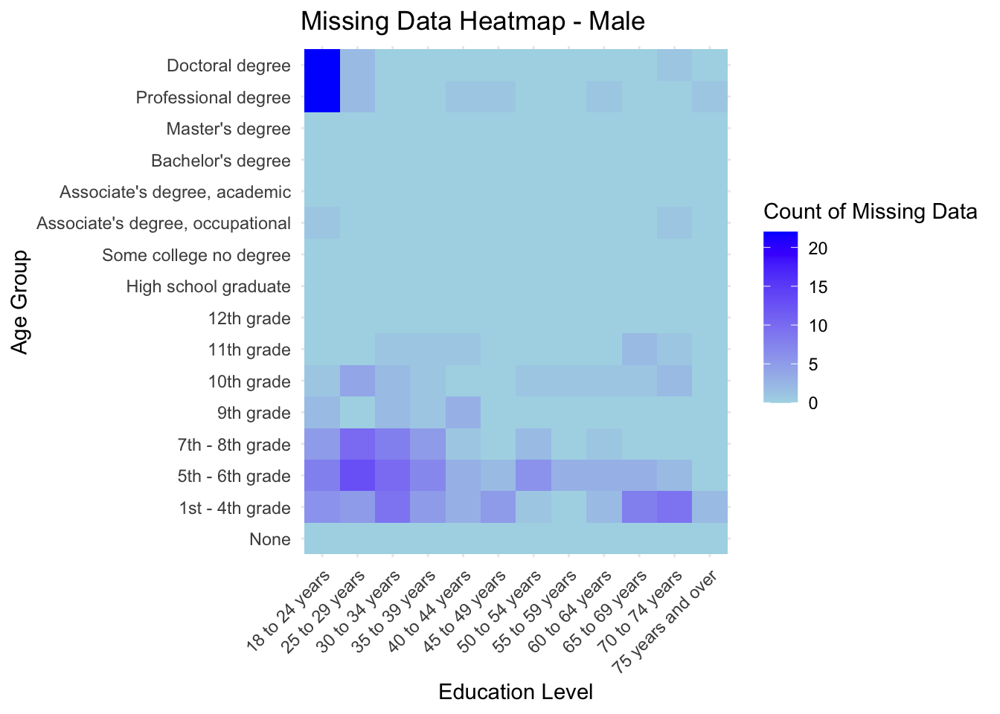
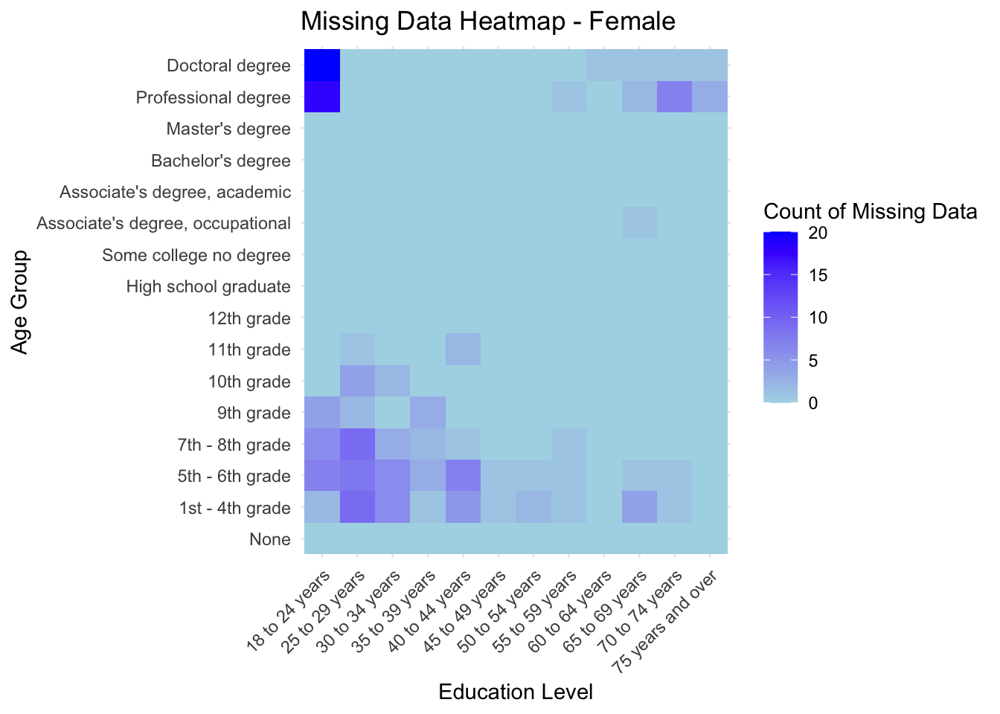
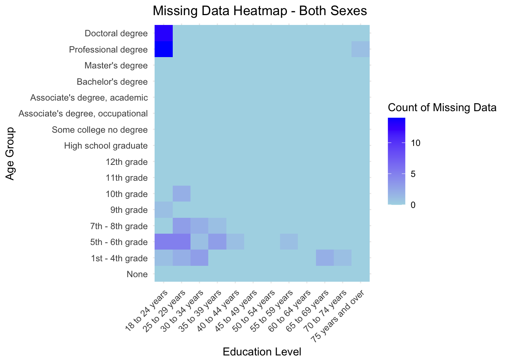
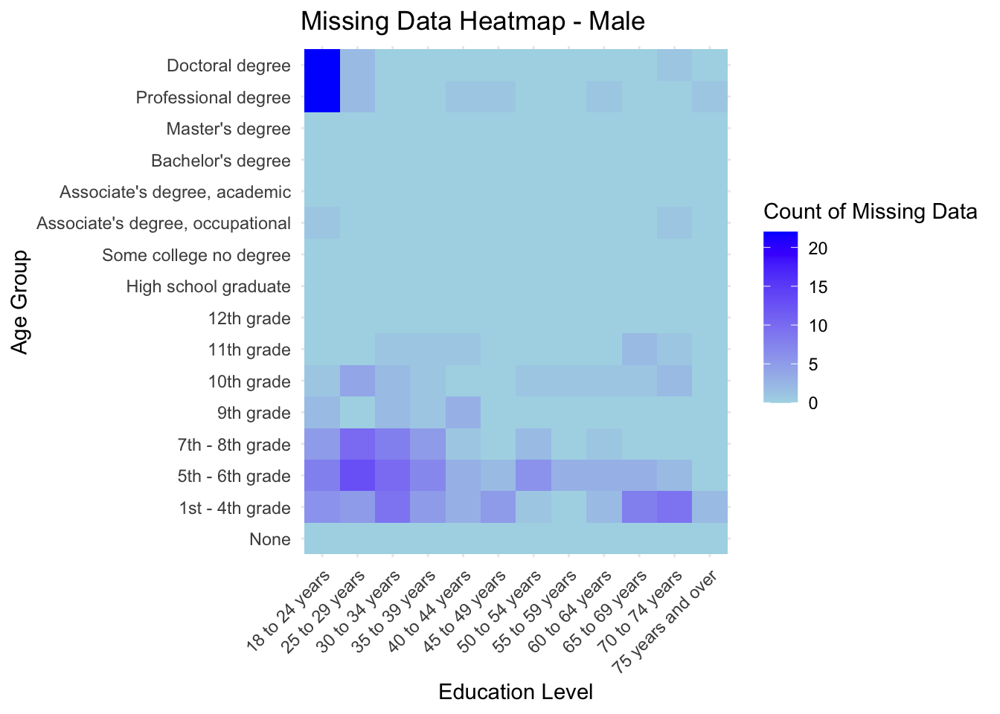
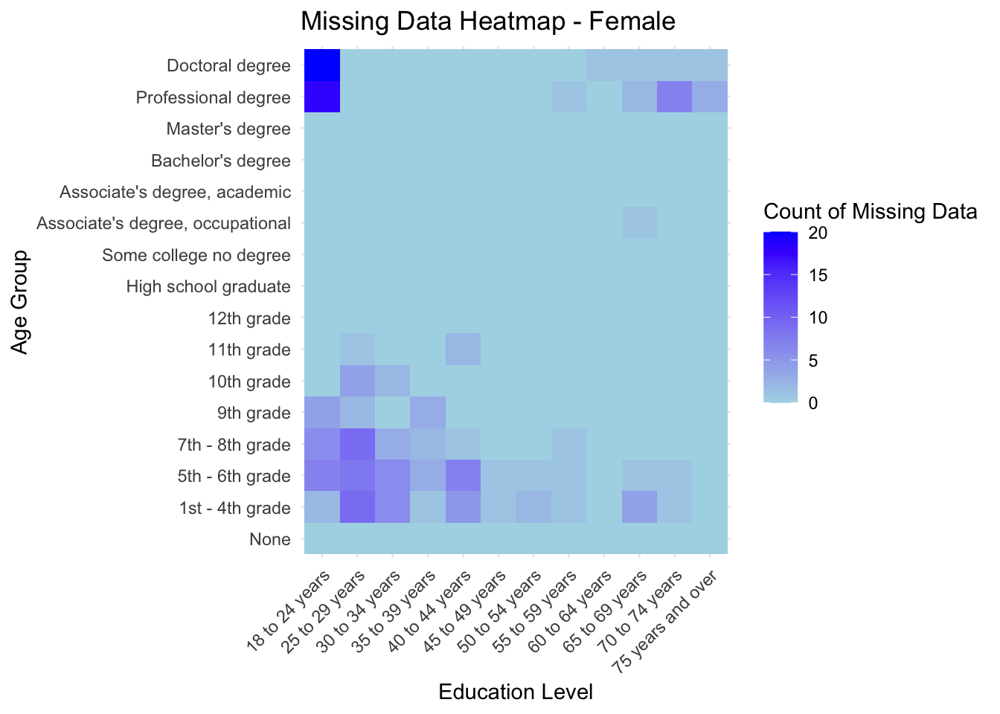

We found our “Education Attainment in the United States” data from the U.S. Census Bureau’s website. U.S. Census Bureau collected the data from the “Current Population Survey-Annual Social and Economic Supplement” and updated the Education Attainment data yearly. For the purpose of our project, we downloaded the Excel worksheets from the section “Table 1. Educational Attainment of the Population 18 Years and Over, by Age, Sex, Race, and Hispanic Origin” from their website for each year between 2012 and 2021. And data sets that include the education attainment data for “Black Alone” is extracted for our project.
Each worksheet contains education attainment data for each gender, and across different age groups in the specific year. Specifically, each worksheet contains three tables: Both Sexes, Male and Female. Each table includes 14 rows of different age groups, including “18 years and over”, “18 to 24 years”, “25 years and over”, “25 to 29 years”, “30 to 34 years”, “35 to 39 years”, “40 to 44 years”, “45 to 49 years”, “50 to 54 years”, “55 to 59 years”, “60 to 64 years”, “65 to 69 years”, “70 to 74 years”, and “ 75 years and over.” Each table contains 16 columns of different types of education attainment, including: “Total,” “None,” “1st - 4th grade,” “5th - 6th grade,” “7th - 8th grade,” “9th grade,” “10th grade,” “11th grade /2,” “High school graduate,” “Some college no degree,” “Associate’s degree,” “occupational,” “Associate’s degree,” “academic Bachelor’s degree,” “Master’s degree,” “Professional degree,” and “Doctoral degree.”
We downloaded 10 worksheets between 2012 and 2021. We plan to import them all into our repositories and write code to combine data from 2012 to 2021. Thus, after some manipulations, we will have one large data set with two new columns to specify gender and year.
We attached the link of our data source for each year between 2012 to 2021 below: 2012: https://www.census.gov/data/tables/2012/demo/educational-attainment/cps-detailed-tables.html 2013: https://www.census.gov/data/tables/2013/demo/educational-attainment/cps-detailed-tables.html 2014: https://www.census.gov/data/tables/2014/demo/educational-attainment/cps-detailed-tables.html 2015: https://www.census.gov/data/tables/2015/demo/education-attainment/p20-578.html 2016: https://www.census.gov/data/tables/2016/demo/education-attainment/cps-detailed-tables.html 2017: https://www.census.gov/data/tables/2017/demo/education-attainment/cps-detailed-tables.html 2018: https://www.census.gov/data/tables/2018/demo/education-attainment/cps-detailed-tables.html 2019: https://www.census.gov/data/tables/2019/demo/educational-attainment/cps-detailed-tables.html 2020: https://www.census.gov/data/tables/2020/demo/educational-attainment/cps-detailed-tables.html 2021: https://www.census.gov/data/tables/2021/demo/educational-attainment/cps-detailed-tables.html
The raw data we have acquired is already subdivided by gender and age ranges. To address our research questions effectively, we will need to develop additional methods to segment this data. This approach will allow us to create targeted plots from these refined subsets, providing clear and direct visual answers to our research inquiries. Here is how we use the data to answer the research questions:
Trend in Higher Education: for male and female, sum up columns after Bachelor’s degree as numerator and use total population as denominator to produce year to year percentage; use bar or line plot to show trend and amount. Trend in No Education History:similarly sum up the column of none education as numerator and use total population as denominator to produce year to year non-education percentage; use bar or line plot to show trend and amount.
Doctoral Degree across Different Age Groups: get all data under the column Doctoral Degree; use heat map where the y-axis shows age groups and x-axis shows years; each square on the heat map represent number of people who have earned a Doctoral degree from a specific age group and year.
Year to Year Education Attainment Comparison: get proportion of above and below Bachelor’s degree for both male and female each year and put together the ten years by using ten simple mosaic plots.
Overall Education Development:(a)segment the male and female population into different education levels; present each segment as an area in an area plot. (b)compare data from 2012 and data from 2021 to see how age groups from the two year are distributed differently across different education attainment; use a parallel ordinate plot in which lines are color-coded by years to check for clusters and patterns.
COVID Impact on Education Attainment: calculate proportion of education level above and below Bachelor’s degree for years before COVID (2012-2019) and after COVID(2020-2021); plot proportion on a mosaic plot
This question serves as a concluding question that we answer by aggregating our conclusion from previous plots.



In this missing value analysis, we analyze missing values for data sets not limited to “Black only” data sets for a better understanding for patterns in missing values. Missing values across data from all race renders a better idea of why certain data is missing despite missing values from the “Black only” data sets are scarce. Here, we provided three heatmaps: “Missing Data Heatmap - Both Sexes”, “Missing Data Heatmap - Male”, “Missing Data Heatmap - Female.” Each heatmap summarize the missing data from all 60 data frame with the following logic: if there is a missing value in one dataframe in a particular entry (Doctoral Degree & 18 to 24 years), the heatmap will add 1, and we loop through all 60 data frame to add up the number of missing value for each entry. To further explain, each heatmap contains the missing values from 2012 to 2021 for all races in each entry.
In our circumstances, a missing value may indicate that the Bureau didn’t collect any data of a particular entry. Another case is that number of people in an entry is less than 1000, so that the Bureau didn’t give a value for that entry because the entry less than 1000 will have a value of zero (the units in the original table is 1000).
In all three heatmaps, we can observe that there are lots of missing values for Doctoral degree and Professional degree for the year group of 18 to 24. This is reasonable because doctoral degree and professional degree took longer time to be granted, so that only a small group of people (less than 1000), which may produce a missing data. Besides, there are a small proportion of missing values in the up right corner of heatmaps for Male and Female, which is also reasonable because fewer people in the period of World War 2 may get a Doctoral or Professional Degree.
There are also consistent huge proportions of missing values in area below 12th grade for all age groups, indicating that a lot of people didn’t have a chance to go to high school across all years.